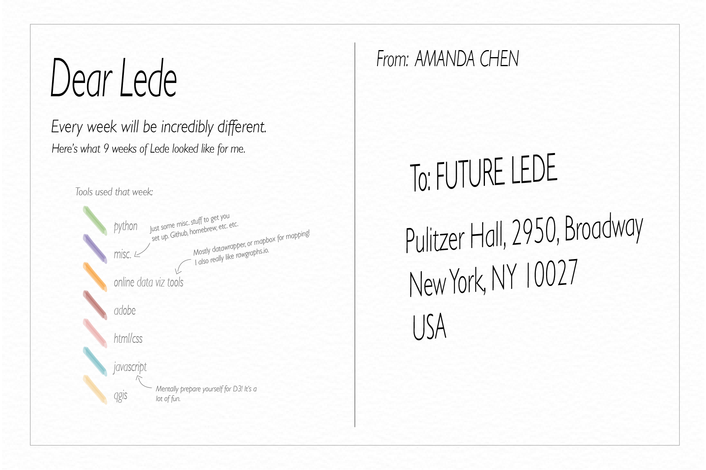
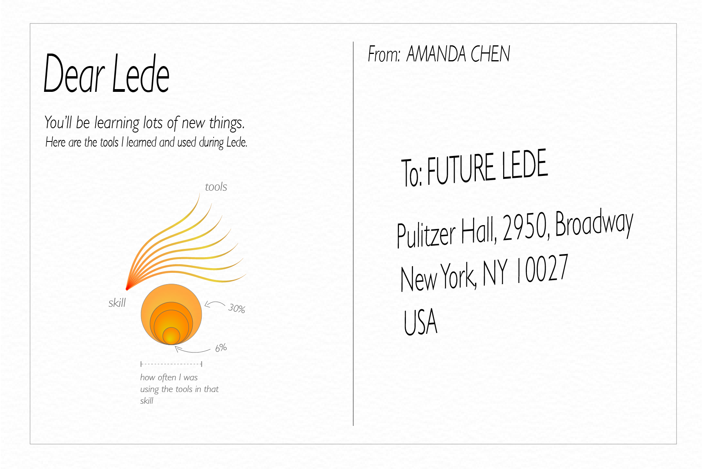

I decided to dive into the world of data journalism and visualization the summer of 2022. Through Lede (you can read more about it here), I learned an incredible amount of what it takes to build a visual story from end to end. My mornings and evenings taken up by data, code, and design, I was able to build from scratch four projects that I can be proud of. There were many bumps, observations, and lessons learned along the way and I think they're worth sharing. This is a visual exploration of my experience as a Lede student learning data journalism at Columbia's Graduate School of Journalism.
Every week at Lede is different. Your first week will be spent learning the basics of python and a lot of miscellaneous things to get you all set up. Then, all of the fun with data analysis and clean-up begins. Through for loops, lists and dictionaries all the way to pandas and data frames, you’ll learn how use code to shape data into a story. The weeks get a little crazier as d3.js, scrollytelling, scraping, and more get added into the mix, but it’s all a lot of fun and you’ll learn incredible amounts. Here are the tools I used each week—about 90% of them were new to me.
From data collection, to analysis, visualization and development, there are numerous tools involved with creating data-driven stories end to end. For quite literally any question, problem, or bug you encounter, chances are there is already a tool, library, repository, or youtube video (shout out to Soma, the best youtuber) out there for you. We’ve learned over 35 tools in class, but we’ve only scratched the surface.
Every project workflow will be a little different. Sometimes ideas come easy and you’ll get right to work. Other times, you’ll hit a dead end and will need to pivot, or come up with an entirely new topic. Either way, try your best not to stress; no workflow will be perfect, and learning to be flexible is vital.
You’ll be spending a ton of hours on Lede, and it probably won’t feel like enough. Don’t worry, you’ll learn to prioritize what you are most interested in learning, and it’s okay if you can’t get to everything! There are many forks in the road as the curriculum becomes more complex, and people will naturally begin to hone in on their interests. Some, including me, will focus on visualization and design, while others will continue to sharpen their data skills.
All are okay, the lessons and videos will live on the internet for as long as the internet exists, and you can always go back to them when the time comes.
Something I have not quite visualized yet, but could not leave out—teamwork. There is only so much you can learn when you are learning alone. Take advantage of your fellow students who are going through the same thing as you, TAs who have probably already made the same mistake as you, and Soma who seems to know just about everything. The individuals you'll meet will have a wealth of knowledge, creativity, and passion—use that to your advantage, and who knows what brilliant ideas might come out of it.
Thank you to my 2022 cohort for all the late nights spent figuring out homework and project issues, and special thanks to Aishi for this brilliant idea, and helping me see what this Dear Lede project could be.